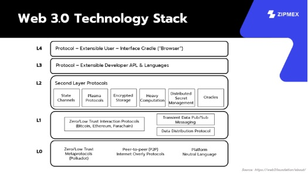

องค์ประกอบของเว็บ3.0

เราจะขออ้างอิงองค์ประกอบของ Web 3.0 จาก Web 3.0 Foundation ที่ได้แสดงข้อมูลของ Technology Stack ของเว็บไว้ให้ โดยแบ่งออกเป็น 5 Layers ได้แก่
- Layer 0 เป็นส่วนพื้นฐานของ Stack เทคโนโลยีของ Web 3.0 ที่ประกอบไปด้วยวิธีการสื่อสารของ Nodes ต่าง ๆ และวิธีการติดตั้งโปรแกรมในระดับ Lowest Level
- Layer 1 เป็นส่วนที่ทำหน้าทั้งในส่วนของการจัดเก็บ, แจกจ่าย และการโต้ตอบข้อมูลระหว่าง Nodes ด้วยกัน
- Layer 2 เป็นส่วนที่ทำหน้าที่ในการสนับสนุน Layer 1 ด้วยการเพิ่มความสามารถฟังก์ชันต่าง ๆ อย่างเช่น การทำ Scaling, การจัดเก็บข้อมูลแบบเข้ารหัส (Encrypted Messaging) และ Distributed Computing (เป็นการเชื่อมโยงคอมพิวเตอร์หลายเครื่องเข้าด้วยกันบนเครือข่ายเข้าเป็นกลุ่ม เพื่อแบ่งปันข้อมูลและประสานพลังการประมวลผล)
- Layer 3 เป็นส่วนเกี่ยวกับภาษาโปรแกรมมิ่ง และ Libraries ที่รวบรวมชุดฟังก์ชันต่าง ๆ เพื่อสำหรับให้นักพัฒนาเข้ามาใช้พัฒนาตัว Applications ได้อย่างเหมาะสม
- Layer 4 เป็นส่วนบนสุดของ Stack ที่ได้รวบรวมโปรแกรมต่าง ๆให้ผู้ใช้งานทั่วไป ที่ไม่ใช่นักพัฒนาเข้ามาใช้งานโดยตรงกับ Blockchain ได้
ที่มา
https://www.finnomena.com/zipmex/what-is-web-3-0/